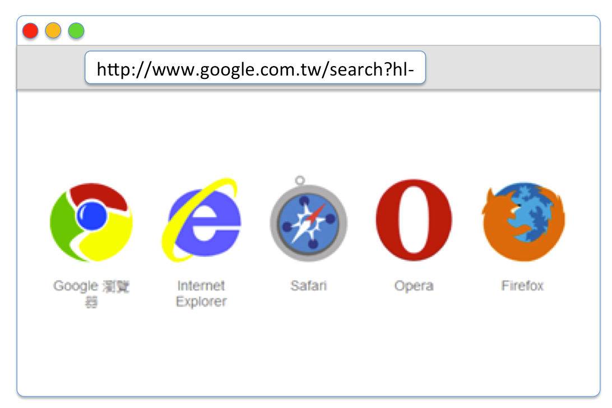

Web Hackathon Seminar
1
Web 發展 / JavaScript / DOM
既然這門專題是
Web Programming
那麼不外乎
前端
瀏覽器使用者介面
後端
處理使用者請求的伺服器、資料庫

Web 應用程式的發展
.edu 的網頁保存了很多歷史遺跡...
十五年前
小學、國中會教你使用 Frontpage
或是 Dreamweaver 來開發網站
其實一直有在推陳出新，以前還不屬於 Adobe
那時候的 fashion 就是
會閃爍的跑馬燈
像仙女棒一般的滑鼠游標
紀錄來客數的計數器
那時我們看到的網頁是這樣的
之後漸漸地出現了所謂動態網站
可以查詢資料庫、記錄使用者
那時候好像幾乎都是用什麼 P 開發
JSP、PHP、ASP
<?php
// 純屬亂寫，很可能不能跑
// 現代 php 寫得好就不會長這樣了
$username = $_POST['username'];
$password = $_POST['password'];
// 前後台混在一起
if ($username === 'hello world') { ?>
<h1><? echo $username ?></h1>
<? } else { ?>
<ul>
<? for ($i = 0; $i < 10 ; $i++) { ?>
<li><? echo $i ?></li>
<? } ?>
</ul>
<? }
現在來看，這種寫法已經不被接受
Ruby on Rails 出現

優雅、且對開發者友善，很快地席捲 Web 開發
哲學
- Don't Repeat Yourself
- Convention Over Configuration
- RESTful
- Test Driven Development
現在各種語言幾乎都有一套承襲 Rails Style 的框架
Ajax 的盛行
還記得哪個時候漸漸的
網頁換頁之間 loading 比較少出現白畫面了嗎？
像是 Gmail, Google Map 等 app
操作體驗都不太會中斷的時候
這就是 Ajax (Asynchronous JavaScript and XML) 的功勞
Ajax 說明
早期的網頁要跟伺服器交換資料，按下超連結或是提交表單，都會直接送出並回傳新的頁面的 HTML 回來
透過 JavaScript 非同步的方式，跟後台拿資料，
在這中間使用者還是可以進行其他操作，不會被打斷
雖然叫做 Asynchronous JavaScript and XML...
但現在都用 JSON

XML

JSON

才稍微開始有所謂
前後分離的工作方式開始出現
Client Side Render 技術
問題：
- 網頁往應用程式發展，越來越龐大
- Ajax 使用太多會導致程式意外的複雜
- 前端需要一些架構，MVX (之後還會提到)
- 前後端所使用的 view 模板不容易共用
解決方式：
- 讓 javascript 來負責顯示畫面
- 全面使用 Ajax 並使用一些架構模式
- 伺服器則變成 API server
2010 年開始，風向一直在變

元件式開發 & 狀態決定 UI
// 如果 UI 是一種有順序依賴性的東西
// 某個 bug 需要 5 個操作步驟來重現
// 可能會讓你很崩潰
// 那如果把應用程式 UI 想像成一個 y = f(x) 的函數呢？
var AppUI = AppComponent(state);
這就是 React 帶來的影響，會在後幾個禮拜漸漸講到
後端的語言現在百花齊放
可以跑在伺服器 (電腦) 的程式語言都可以用
現在主流的伺服器程式語言
這門專題會涵蓋的內容
- JavaScript
- React
- Classic MVC framework - Ruby on Rails
- Database - MySQL
- Node
JavaScript
因為是瀏覽器內獨佔的程式語言
基本上它的引擎就有以下公司在幫忙加強：
- Microsoft (IE, Edge)
- Google (Chrome)
- Mozilla (Firefox)
- Apple (Safari)
相對其他直譯式語言速度稍微較快
因為可以直接在網頁分享
所以傳播速度、社群能量較強
另一方面 Web 技術可以使用在開發特定的
手機應用程式、桌面應用程式開發上
React
facebook 在 2013 年 open source
它嘗試證明有比過去 10 年的主流 - MVC 更好的方式
至今已經被許多開發者、公司採用
用 Native 的 UI 跨足 Mobile
最近才剛 release android 的版本
from twitter@yannickdot
配合 electron 做桌面程式

甚至還可以用在 Command line UI
Node.js
最初 (2009) 是為了能做出一套非同步的伺服器架構而成
它的套件庫 npm 有難以想像的下載量
啊不對
那是上學期的
下面這個才是現在的
npm 的套件數量也已經遠超過其他語言
還在繼續拉開差距
一路漫延到手機應用程式、桌面應用程式、
IoT、機器人、VR 開發
Rails
- Restful
- MVC
- ORM (Active Record)
- Migration
- Generator
Database
關聯式資料庫跟 SQL
NoSQL
學會這些不是最重要的
重點是能去實做一些東西出來
進入 JavaScript 主題
想要測試語法，請直接打開瀏覽器
console.log 是你 debug 好夥伴
var a = 1;
console.log(a); // 可以是任何型別
型別
JS 只有五種內建型別 (primitive types) 其他都是物件
| 型別 | 範例值 |
|---|---|
| Undefined (未定義) | undefined |
| Null (空值) | null |
| String (字串) | '哎呀' |
| Boolean (布林值) | true, false |
| Number (數字) | 3.1415926 |
常用物件
| 型別 | 範例值 |
|---|---|
| Object (物件) | { name: 'Tim', age: 21 } |
| Array (陣列) | [ 1, 2, '3', true] |
| Date (日期) | new Date() |
| RegExp (正規表達式) | /\.css$/ |
所有的值被分成兩個陣營..
Truthy
Falsy
不是 Falsy 的值..都是 Truthy
這會用在 if, while
邏輯運算子 &&, ||, 三元運算子判斷等等地方
if else, switch case, for loop, while loop
這些跟其他語言沒有太大差異
DOM
文件物件模型 (Document Object Model, DOM)
它提供了一個文件（樹）的結構化表示法，並定義讓程式可以存取並改變文件架構、風格和內容的方法。
本身不是 JavaScript 的一部分，是瀏覽器環境提供的
以後教到 node 就不會有瀏覽器裡面的
window, document 物件
要把這種文字檔，轉換成可操作的形式
DOM 是由一個一個的 DOM Node 組成
瀏覽器裡面最重要的就是的
window, document 物件
window 是全域物件
而 document 是 window 物件下的一個屬性
對於 API 有任何疑惑時
請參考 MDN
開一個 HTML 檔來試試
選擇 DOM Node
body 是個特殊的 node
可以直接用 document.body 拿到
DOM Node 物件
建立 DOM Node
移除 DOM Node
插入 DOM Node
改變 style, className
事件
| 名稱 | 發生處理狀況 |
| click | 點擊的時候 |
| dblclick | 連點兩次的時候 |
| focus | 開始在輸入框輸入時候 |
| blur | 離開輸入框時候 |
| change | 輸入值改變的後 |
| keydown | 鍵盤按下去的時候 |
| keyup | 鍵盤按下去的鍵上來的時候 |
| mouseenter | 滑鼠進到元素裡面的時候 |
| mouseleave | 滑鼠移出元素的時候 |
練習
1. 打開 browser console 來試一遍剛剛的一些 DOM 操作
2. 寫一個 button，
在你 click 的時候會 appendChild 進去一個 body
THE END
Thanks for listening